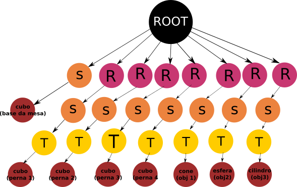

Básico para movimentação de câmera: Scene Graph - Mesa com Objetos
Danillo Lobo Ferraz
Marcos Antônio de Jesus Filho
Usando o teclado e o mouse para movimentação da câmera.
Pressione H para Ocultar/Visualizar a mensagem de Ajuda
Ajuda
Movimento da Câmera
- w e arrowUP, s e arrowDown - move para frente ou para trás
- d e arrowRight, a e arrowLeft - move para direira ou para a esquerda
- PageUp ou PageDown - move para cima ou para baixo
- q ou e - Rotaciona em torno do eixo N
- Clique do mouse e movimento - rotaciona no plano UV
